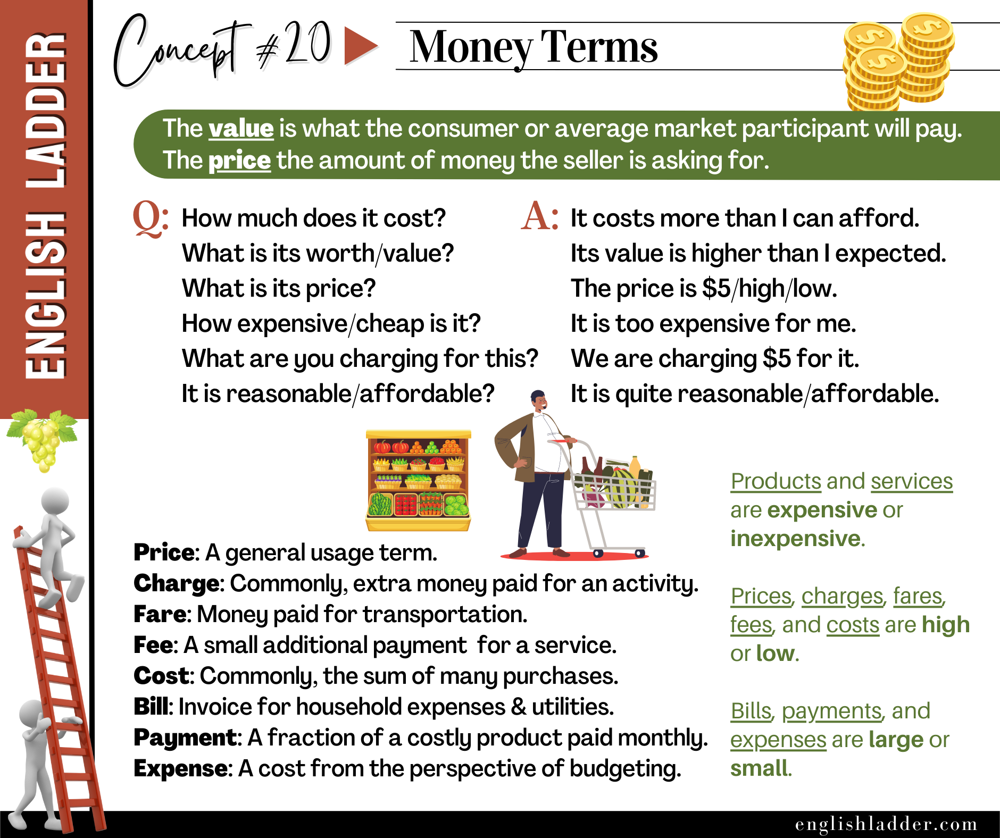

Item 01
Which question is best for inquiring about the cost of a laptop?
Reveal answer
The correct answer is A. This question uses “How much” which is the most appropriate way to ask about price or cost.
Grammar Concepts #20
This rebuilt lesson keeps the original concept image, tightens the structure, and turns the explanation into a clearer self-study guide.

The image shows several question formats used to inquire about cost:
These questions use different interrogative structures:
Used with adjectives like “much,” “expensive,” or “cheap” Example: “How expensive is that new smartphone?”
Used to ask about specific attributes like worth, value, or price Example: “What is the value of this antique watch?”
Begin with “Is” or “Are” to ask about qualities like reasonableness or affordability Example: “Is this apartment affordable for a student?”
The image provides several example responses:
These responses demonstrate various grammatical structures:
Using “more than” or “higher than” to compare prices or values Example: “The concert tickets cost more than we budgeted for.”
Expressing that something exceeds a desirable or acceptable level Example: “This restaurant is too expensive for our group dinner.”
Using “are charging” to indicate an ongoing price or fee Example: “They are charging $50 per hour for tutoring services.”
Modifying adjectives like “reasonable” or “affordable” Example: “The new café’s prices are quite reasonable for the quality of food they serve.”
The image defines several related terms:
When using these terms, pay attention to their specific contexts:
Example sentences:
The image mentions that products and services can be “expensive” or “inexpensive,” and that prices, charges, fares, fees, and costs can be “high” or “low.” Bills, payments, and expenses can be “large” or “small.”
Example sentences:
Remember that when using these adjectives, you can create comparative and superlative forms:
Example: “Among all the restaurants we visited, this one had the most expensive menu but the lowest service charges.”
By understanding and practicing these terms and structures, non-native English speakers can become more comfortable discussing money-related topics in various contexts.
Examples in Sentences:
Note the differences and specific contexts in which these terms are used.
Answer the quiz questions below with responses consistent with the grammar concepts taught on the left.
Which question is best for inquiring about the cost of a laptop?
The correct answer is A. This question uses “How much” which is the most appropriate way to ask about price or cost.
Which sentence correctly compares the price of a phone to someone’s budget?
The correct answer is A. This sentence correctly uses “more than” to make a comparison.
Which sentence best expresses that a car’s price exceeds someone’s budget?
The correct answer is B. The phrase “too expensive” correctly expresses that the price exceeds an acceptable level.
Which sentence correctly describes an ongoing pricing situation for concert tickets?
The correct answer is D. This sentence correctly uses “are charging” to describe an ongoing action.
Which sentence best describes the prices at a new café?
The correct answer is B. This sentence correctly uses “quite” to modify the adjective “reasonable”.
Which sentence correctly describes an additional cost for Wi-Fi at a hotel?
The correct answer is C. This sentence correctly uses “charge” to describe an additional payment for a service.
Which sentence correctly describes the cost of a bus trip to the airport?
The correct answer is B. This sentence correctly uses “fare” to describe the cost of transportation.
Which sentence correctly describes a recurring bank account cost?
The correct answer is C. This sentence correctly uses “fee” to describe a regular payment for a service.
Which sentence best describes the total expense of a home renovation project?
The correct answer is D. This sentence correctly uses “cost” to refer to the total sum of expenses.
Which sentence correctly reminds someone about a utility payment?
The correct answer is B. This sentence correctly uses “bill” to refer to an invoice for household utilities.
Which sentence correctly describes regular car financing installments?
The correct answer is D. This sentence correctly uses “payments” to describe regular installments on a large purchase.
Which sentence best describes reducing monthly outgoings to save money?
The correct answer is C. This sentence correctly uses “expenses” when discussing costs from a budgeting perspective.
Which sentence correctly compares the price of organic produce to conventional options?
The correct answer is C. This sentence correctly uses “expensive” as an adjective to describe higher-priced items.
Which sentence best describes public transportation as an economical option?
The correct answer is B. This sentence uses “inexpensive” to describe a service that doesn’t cost much. “Budget,” “bargain,” and “discount” are not as commonly used as adjectives in this context and sound less natural.
Which sentence best describes increased hotel prices during peak season?
The correct answer is D. This sentence correctly uses “high” to describe elevated prices.
Which sentence best describes reduced museum entry costs for students?
The correct answer is C. This sentence correctly uses “low” to describe a small fee.
Which sentence best describes increased utility costs in winter?
The correct answer is B. This sentence correctly uses “larger” to describe increased bills.
Which sentence correctly compares restaurant prices?
The correct answer is C. This sentence correctly uses “most expensive” and “lowest” to make comparisons.
Which question best asks if a price is fair?
The correct answer is C. This question correctly uses “reasonable” to inquire about the fairness of a price.
Which question best asks if a student can manage the cost of an apartment?
The correct answer is A. This question correctly uses “affordable” to ask if the apartment is within a student’s financial means.
Which sentence correctly describes the current pricing for tutoring services?
The correct answer is D. This sentence correctly uses “are charging” to describe an ongoing action.
Which question best asks about the price of an antique watch?
The correct answer is A. This question correctly uses “What” to inquire about the price or cost of an item.
Which sentence best asks about the value of a painting?
The correct answer is A. This question correctly uses “worth” to inquire about the value of an item.
Which sentence best describes a price reduction?
The correct answer is B. This sentence correctly uses “decreased the price” to describe a reduction in cost.